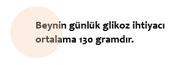
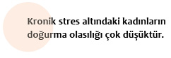
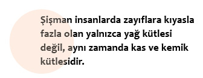
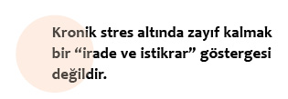

Efsaneler

Şişmanların bütün kapitalist dünyada çağımızın yeni siyahları, şişmanlığınsa çağımızın en tehlikeli epidemisi ilan edildiği ve dünyanın birçok yerinde bu düşmana savaş açıldığı bir dönemde kalkıp şişmanlığın aslında son derece sağlıklı olduğunu söylemek sizlere tabii ki oldukça tuhaf gelecektir. Ama diğer bütün durumlarda olduğu gibi, şişmanlık konusunda da hiçbir şey göründüğü gibi değildir. Bu sebeple durumu daha iyi anlayabilmek için önümüzdeki bilgisizlik, önyargı ve ırkçılıkla örülmüş kalın perdeyi kaldırıp, gerçeklerle yüzleşmeliyiz.
Var olan bütün gerçekleri göz önünde bulundurduğumuzda günümüzde bize “şişmanlık ya da obezite epidemisi” şeklinde gösterilen olgunun aslında yalnızca ve yalnızca bir “stres epidemisi” olduğunu görürüz. Ve şişmanlık olgusuna biraz daha derinden baktığımızda, bunun zor koşullarda bedenin hayatta kalma adına attığı son derece bilgece bir adım olduğunu anlamış oluruz.
Tabii ki şişman insanlar hareket ve bedensel performans açısından bazı dezavantajlarla yaşamak zorundadırlar, ancak daha etraflıca baktığımızda şişmanlığın fiziksel avantajları dezavantajlarından çok daha fazladır. Aynı şekilde kronik stresli bir ortamda kişinin B grubunda olup şişmanlaması, A grubunda olup zayıflamasından daha sağlıklıdır.
Beynin enerji ihtiyacı
Hepimiz beynin oksijene olan ihtiyacının ne kadar elzem olduğunu ve oksijen eksikliğinin beyinde bazen geri dönüşü olmayan hasarlara yol açtığını biliriz. Oksijen için geçerli olan bu durum beynin enerji, yani glikoz ihtiyacı için de geçerlidir. Bu ihtiyacı karşılanmadığında da beyinde doku kaybı meydana gelir ve nihayetinde beyin ölümü gerçekleşir. Ama beynin bu noktaya gelmesi oldukça zordur. Çünkü beynin bir oksijen deposu olmamasına karşın, ciddi bir glikoz deposu vardır.
Glikoza ihtiyaç duyduğu her an stres sistemini aktive ederek depolardan bu ihtiyacını karşılar. Uzun süre kıtlık yaşandığındaysa depoları tükettikten sonra kasları, kemikleri ve iç organları tüketmeye başlar. Dolayısıyla oksijensiz ancak birkaç dakika kalabilirken, açlık durumunu neredeyse aylarca devam ettirebiliriz. Ancak bu durum yalnızca stres sistemi (Brain-Pull) işleyen insanlar için geçerlidir.
Daha önce de belirttiğim gibi herhangi bir olağanüstü durum olmadığında beynin günlük glikoz ihtiyacı ortalama 130 gramdır. Ancak stresli bir durumla karşılaştığımızda beynin glikoz ihtiyacı doğal olarak artar. En basitinden bir sınava girdiğimizde, sınav ortamının yarattığı stres, soruları cevaplayabilmek için harcadığımız enerji, ebeveynlerimizin ve bizim, kendimizden beklediği performansın yarattığı stres gibi birçok faktör beynin glikoz ihtiyacının aşırı derecede yükselmesine yol açar. Beyin ihtiyaç duyduğu bu glikozu sınav esnasında stres sistemini devreye sokarak depolardan çeker. Bundan dolayı sınav sonrasında acıkırız ve vücudumuza aldığımız besinle de depoların eksiğini kapatırız. Ancak ilk bakışta son derece akıllıca görünen bu sistemin şöyle bir dezavantajı vardır ki o da stres sisteminin devreye girmesi halinde bedenin stres hormonu üretmesidir. Burada en önemli hormon kortizoldür. Gündelik hayatta zaman zaman strese girmemiz ve bedenin kortizol üretmesi büyük bir sorun değildir. Sorun kronik strese girdiğimizde başlar, çünkü bu durumda beden devamlı kortizol üretmek zorunda kalır. Ve kortizol bir yığın fiziksel rahatsızlığa yol açar. İşte tam da bu noktada B grubu insanlarda beden “bilgeliğinin” devreye girmesi ve stres sistemini devre dışı bırakması organizmanın yararınadır. Organizma böylelikle kortizolden kaynaklı pek çok rahatsızlığa set çekmiş olur. Tek problem, kişinin beyin enerjisini dışarıdan almasıdır, bu da kilo alımına yol açar. Ama B grubundakiler yiyecek kıtlığının olduğu bir ortamda kronik bir stres yaşasaydı, durum son derece vahim olurdu. Beyin glikoz ihtiyacını hem depolardan karşılayamayacak hem de kişi enerjiyi dışarıdan alamayacaktı.

Kronik stres altındayken şişmanlığın neden daha sağlıklı olduğunu anlayabilmek için gelin şimdi günümüzde yaygın olan hastalıklara bakalım.
Şişmanlık
Şişmanlık yalnızca B grubunda ortaya çıkar. Bunun nedeni daha önce de belirttiğim gibi, bu insanların stres sistemlerinin duruma adapte olmasıdır. A grubu insanları, stres sistemleri duruma adapte olmadığından şişmanlamazlar. Ancak stresin uzun yıllar sürmesi halinde bu gruptakilerde kortizol göbeği oluşur.
B grubu insanlardaysa beyin stres sistemini devre dışı bırakarak organizmayı, kişiye fazla yedirerek de kendini güvenceye alır. Bu durumun dezavantajı, kişinin şişmanlaması, hareket kabiliyetini kaybetmesi, fiziksel performansının düşmesi ve eklem sorunlarıdır. Söz konusu olan bu rahatsızlıklar yalnızca B grubundakilere özgüdür.
Karın içi yağlanma
Karın içi yağlanma her iki grupta da görülür ama A grubunda daha belirgindir. B grubundakiler kilo almanın ikinci evresinde karınlarına yağ biriktirirler. Bu evrede stres sistemleri henüz çalışıyor durumdadır. Ancak üçüncü evreye geçtiklerinde artık abdominal değil, yalnızca perifer yağ biriktirirler.
A grubu insanlarındaysa yoğun bir abdominal yağ oluşumu baş gösterir. Son derece ince yapılı olmalarına rağmen kocaman göbekleri olur. Bu, beynin enerji ihtiyacını karşılayabilmek için yalnızca kendisi için inşa ettiği ekstra bir depodur. Artık birçok doktor bu durumun farkında olduğundan hastalarının beden kitle indeksini (Body-Mass-Index) ölçmek yerine bel çevresini ölçmektedir. Zira sorun şişmanlık değil, karında depolanan yağdır ve bu da daha çok A grubundakilerde gözlemlenir.
Yaşam süresinin kısalması
Günümüzün genel geçer bilgilerine göre şişmanlık daha erken ölüme yol açar. Bu nedenle birçok insan daha uzun ve sağlıklı yaşayabilmek adına elinden gelen her şeyi yapar. Oysa stresle ilgili araştırmalar yapan bilim insanlarının elde ettikleri verilere baktığımızda bu durumun da göründüğü gibi olmadığını anlıyoruz.
Çevre şartlarının kronik bir şekilde stresli olduğu bir durumda şişman insanlar zayıf insanlara göre yalnızca daha sağlıklı değil aynı zamanda daha uzun yaşar. Burada da belirleyici olan yine kortizol hormonu ve onunla birlikte karın içi, yani abdominal yağ birikimidir. Bilim insanları ayrıca böbrek yetmezliği, kalp krizi ve diyabet gibi ağır hastalıklarda A grubunda ölüm riskinin B grubuna göre daha yüksek olduğunun altını çiziyor. Mauritius Adası ve Danimarka’da yapılan araştırmalar, beden kitle indeksi yüksek insanların beli kalın insanlara kıyasla daha uzun yaşadıklarını gösteriyor.
Kısırlık (infertilite)
Nasıl etnik çoğunluk-azınlık dinamiğinde, azınlıklar neredeyse bütün olumsuzlukların kaynağı olarak gösteriliyorsa, şişmanlar-zayıflar dünyasında da şişmanlık yalnızca estetik olarak uzak durulması gereken bir olgu değil, aynı zamanda sağlık açısından da en tehlikeli epidemilerden biri olarak gösteriliyor. Hâkim anlayışa göre şişman insanlar fazla kilolarıyla bir yığın hastalığa kapı açmakla kalmıyor, aynı zamanda neslin devamını tehlikeye sokuyorlar. Nitekim bu anlayışa göre şişmanlık kısırlığı da tetikleyen bir olgudur. Şişmanlar söz konusu olduğunda nasıl diğer bütün önyargılar sorgusuz sualsiz kabul görüyorsa, kısırlıkla ilgili önyargı da kabul görmüştür. Ve hatta günümüzde birçok kadın hamile kalabilmek için zayıflamaya çalışmaktadır.

Oysa elimizdeki verilere baktığımızda kısırlık konusunun da bir efsane olduğunu görürüz. Bunun en bariz örneği şişman kadınların yoğun olduğu ülke ve sınıflarda doğum oranının diğer ülke ve sınıflarla karşılaştırıldığında çok daha yüksek olmasıdır. Ayrıca stres alanında yapılan araştırmalar kanda kortizol hormonunun sürekli yüksek olmasının doğurganlığı olumsuz etkilediğini gösteriyor. Belli ki söz konusu hamilelik olduğunda da beyin, durumu enerji politikası açısından ele alıyor. Yapılan araştırmalar özellikle kronik stres altında kortizol göbeği oluşmuş kadınların doğurma olasılığının oldukça düşük olduğunu gösteriyor.
Tabii ki bu sonuçlar genel olarak zayıf kadınların şişmanlara göre daha az doğurgan olduğu anlamına gelmiyor. Henüz turbo kapitalizmden, elektronik dünyadan ve globalleşmeden nasibini almamış, büyük ölçüde stresten uzak yaşayan toplumlarda doğurganlık bakımından zayıf ve şişman kadınlar arasında herhangi bir fark olmadığını söyleyebiliriz.
Sonuç olarak B grubu insanları kronik stres altında olduklarında kilo almak pahasına da olsa beyin metabolizmalarını sağlam ve dengeli tutarlar. A grubu insanlarıysa beyin metabolizmasını sağlam ve dengede tutmak için bedenlerini yüksek miktarda kortizol hormonuna tabi tutarak biyolojilerini zayıflatırlar. Bu, birçok rahatsızlığın yanı sıra kısırlığa da yol açar.
Damar tıkanıklığı (ateroskleroz)
Damar tıkanıklığı anlamına gelen ateroskleroz, hâkim anlayışa göre diğer bütün rahatsızlıklarda olduğu gibi daha çok şişmanlarda görülür. Oysa yine stres alanında yapılan araştırmalar, damar tıkanıklığının yağlı yiyeceklerden değil, kişilerin stres sistemlerinin yıllarca kronik stres altında aktif kalmasından ve bunun sonucunda da yoğun miktarda kortizol üretmesinden kaynaklandığına dikkat çekmektedir (A grubu). Araştırmalara göre kronik stres altında yaşandığı durumlarda B grubu insanlarının kalp ve beyin damarlarında tıkanıklık olma olasılığı A grubundakilere göre oldukça düşüktür.
Yüksek tansiyon (hipertansiyon)
Diğer rahatsızlıklarda olduğu gibi, yüksek tansiyonun da şişmanlara özgü bir rahatsızlık olduğu bir efsaneden ibarettir. Tam tersine uzun yıllar strese maruz kalmış A grubu insanları kortizol göbeğinin yanı sıra bir de yüksek tansiyon hastası olurlar. Tansiyonun yüksek olması, beyne belirli zamanlarda fazla miktarda kan pompalanması anlamına gelir. Konuyu enerji, yani glikoz açısından ele aldığımızda, fazla miktarda kan pompalanan durumlarda beyne fazla enerji taşındığını söyleyebiliriz. Belli ki beyin, enerji sıkıntısı yaşadığında bu sorunu çözebilmek için pompalanan kan miktarını yükseltiyor. B grubu insanları ise beynin enerji ihtiyacını yiyerek karşıladıklarından (Body-Pull), beyin böyle bir stratejiye başvurmuyor.
Nitekim yapılan araştırmalar yüksek tansiyon ile bel çevresi arasında bir bağlantı olduğunu gösterirken, beden kitle indeksi ile yüksek tansiyon arasında bir bağlantı olmadığının altını çiziyor.
Kalp krizi ve felç
Damar tıkanıklığı ve yüksek tansiyon riskinin, zayıf insanlarda daha yüksek olduğunu belirtmiştim. Dolayısıyla bu grupta kalp krizi ve felç riski de şişman insanlara kıyasla daha yüksektir. Ayrıca kalp krizi geçirildiğinde zayıf birinin krizin etkisiyle ölme riski, şişman birine göre daha yüksektir.
Depresyon
Depresyon konusunda da stres sisteminin devamlı aktif olması (A grubu) ile duruma adapte olması (B grubu) arasında ciddi farklar vardır. Kişinin stres sisteminin devamlı aktif olması ve kanında yüksek miktarda kortizol bulunması, yaşama sevincini kaybetmesine ve depresif olmasına yol açar. Araştırmalar burada da kortizol göbeği ile depresyon arasında bir bağ olduğunu göstermektedir. Aynı şekilde intihar vakalarının şişman insanlar arasında nadiren olması da A grubundakilerin depresyona girme risklerinin daha yüksek olduğunu göstermektedir.
Kas kaybı ve kemik erimesi (osteoporoz)
Kas kaybı ve kemik erimesi insanların yaşı ilerlediğinde ortaya çıkan rahatsızlıklardır. Ancak, kortizol hormonunun yaşlanmayı ne kadar hızlandırdığını göz önünde bulundurursak, bu rahatsızlıkların da kronik stresle bağlantılı olduğunu görürüz.
Kanda kortizol hormonunun devamlı yüksek olması doku kaybına neden olur. Kemik hücrelerinin kaybolması osteoporoza, kas hücrelerindeki kayıp ise kas atrofisine yol açar. Bir taraftan bunlar olurken, diğer taraftan da karın boşluğundaki yağ miktarı çoğalır.
Beyin kendi enerji ihtiyacını karşılayabilmek adına karında yedek bir depo yaratırken, kas ve kemikleri tüketebilir. Bundan dolayıdır ki, şişman insanlar (B grubu), kortizol göbeği olan insanlara (A grubu) kıyasla fiziksel olarak daha güçlüdür, çünkü onların kanlarında kortizol hormonunun olmaması ya da çok düşük seviyede olması, kas ve kemik kaybına engel olur. Yani şişman insanlarda zayıflara kıyasla fazla olan yalnızca yağ kütlesi değil, aynı zamanda kas ve kemik kütlesidir.
Tip-2 diyabet
Tip-2 diyabet de şişman insanların hanesine yazılmış bir hastalıktır. Oysa tip-2 diyabet hastalığı şişman insanlarda olduğu gibi zayıflarda da ortaya çıkabilir. Yani insanlar kronik strese maruz kaldıklarında A ya da B grubu olmalarından bağımsız bir şekilde tip-2 diyabet hastalığına yakalanabilirler. Her iki grupta da diyabete yol açan temel faktör kronik stresken, hastalığın ortaya çıkış dinamikleri A ve B grubunda farklı cereyan eder.

Daha önce beynin stres sisteminin yalnızca stres hormonları salgılamadığını, aynı zamanda pankreası da kontrol ettiğini belirtmiştim. Beyin, çekim gücü zayıfladığında ya da devre dışı kaldığında pankreas üzerindeki hâkimiyetini de yitirir. Beynin hâkimiyetinden kısmen ya da tamamen çıkmış olan pankreas artık keyfince insülin üretmeye başlar. Kanda fazla miktarda bulunan insülin sayesinde bir taraftan kaslara ve yağ dokularına fazla enerji depolanırken, bir taraftan da kanda bir insülin direnci oluşur. İnsüline karşı oluşan bu direnç er ya da geç tip-2 diyabet hastalığının oluşmasına yol açar. Bahsini ettiğim tip-2 diyabet oluşum süreci B grubunda gözlemlenir.
A grubundakilerdeyse tip-2 diyabet oluşumuna yol açan neden pankreas değil, beyne giden damarlardaki tıkanıklıktır. Daha önce bu durumun kronik stres ve bununla bağlantılı yüksek kortizol üretiminden kaynaklandığını belirtmiştim. Damarlardaki bu tıkanıklık nedeniyle beyne giden kan miktarında azalma meydana gelir. Bu durumda beynin glikoz ihtiyacının giderilebilmesi için kandaki glikoz oranının yükseltilmesi gerekir. Yani kan az miktarda gidiyorsa, glikoz konsantrasyonunun yüksek olması gerekir ki, beynin ihtiyacı karşılanabilsin. A grubu insanlarında beynin pankreas üzerindeki hâkimiyeti devam ettiğinden, beyin kandaki glikoz oranının yükselmesi için pankreasa insülin üretimini durdurması komutunu verir. Böylece kandaki glikoz konsantrasyonu yüksek kalır.
Yani A grubu insanlarının kanındaki yüksek glikoz insülin eksikliğinden kaynaklanırken, B grubundakilerde insülin fazlalığından kaynaklanır. Ama her halükârda tip-2 diyabete yol açan temel olgu kronik strestir. Ve her iki durumda da diyabet beynin kendi glikoz ihtiyacını giderebilmek amacıyla başvurduğu bir hayatta kalma stratejisidir.
Hareketsizlik ve eklem hastalıkları
Günümüzde neredeyse bütün rahatsızlıklarda şişmanlık bir risk faktörü gibi gösterilip, şişmanlar bir hedef tahtası haline getirir, ancak daha derinden bir bakış açısı bize durumun sağlıktan öte, azınlıklarla olan ilişkimizi yansıttığını gösterir. Söz konusu olan bir sağlık politikası değil, bir azınlık politikasıdır. Bundan dolayıdır ki şişmanlara atfedilen rahatsızlıkların büyük bir çoğunluğu önyargılardan oluşur. Dolayısıyla bu hastalıklar listesinden yalnızca ve yalnızca hareketsizlik ve eklem hastalıkları şişman insanlara (B grubu) özgüdür.
Bakış açısını değiştirmek
Bu bölümde gördüğümüz üzere stres alanında yapılan araştırmalar bugüne kadar “doğru” bildiğimiz birçok olguyu tersyüz etmektedir. Spiritüel alanda geçerli olan “Hiçbir şey göründüğü gibi değildir” sözü bilimsel alanda da geçerlidir. Stres alanında yapılan araştırmalar bize hiçbir şeyin gördüğümüz ya da bildiğimiz gibi olmadığını göstermektedir.

Bazı insanların stres nedeniyle kilo aldıkları bilinen bir gerçekti. Uzmanların bu insanlara yaklaşımı da “daha iradeli ve istikrarlı” davranıp yemeğe uzak durmaları yönündeydi. Nitekim diğer insanlar da stres altındalardı ve çözümü yemekte aramıyorlardı. Şişman insanlar en azından bu insanları örnek alıp, kendilerini dizginleyebilirlerdi. Ama nöropsikoloji alanında yapılan araştırmalar stres altında kilo almanın bir iradesizlik değil, tam tersine organizmanın hayatta kalmak adına attığı son derece zekice bir adım olduğunu gösteriyor.
Stres altında yemek yemeyen insanlar (A grubu) ise şimdiye kadar şişman insanlara örnek olarak gösteriliyordu. “Sınav stresinden dolayı şişmanladığını söylüyorsun, bak Berfin de sınav stresi yaşıyor ama bir gram bile almadı” tadında cümlelere gündelik hayatta şişman insanlar sıkça rastlar. Oysa stres alanında yapılan araştırmalar, bu insanların stres sistemlerinin kronik strese adapte olamadığını, dolayısıyla kanlarında yüksek miktarda kortizol bulunduğunu ve birçok rahatsızlığa yakalandıklarını göstermektedir. Yani kronik stres altında zayıf kalmak bir “irade ve istikrar” göstergesi değil, tam tersine stres sisteminin esnek olmadığına işarettir, aynı zamanda sağlıksız bir durumdur.
Görüldüğü üzere nöroloji ve nöropsikoloji alanında yapılan araştırmalar şişmanlıkla ilgili şimdiye kadar bildiğimiz, inandığımız birçok noktayı sorgulamamız ve düzeltmemiz gerektiğini gösteriyor. Bu düzeltme için yapmamız gereken tek şey, metabolizmayla ilgili düşünürken beyni, şimdiye kadarki pasif alıcı konumundan, aktif tüketici ve belirleyici konumuna yükseltmektir. Ama insanoğlu daima yeni olana ve bildiklerini sorgulatana kapalıdır. Oysa büyümek ve olgunlaşmak ancak ve ancak insanın bildiklerini, inandıklarını ve gerektiğinde de kendisini sorgulamasıyla mümkündür.